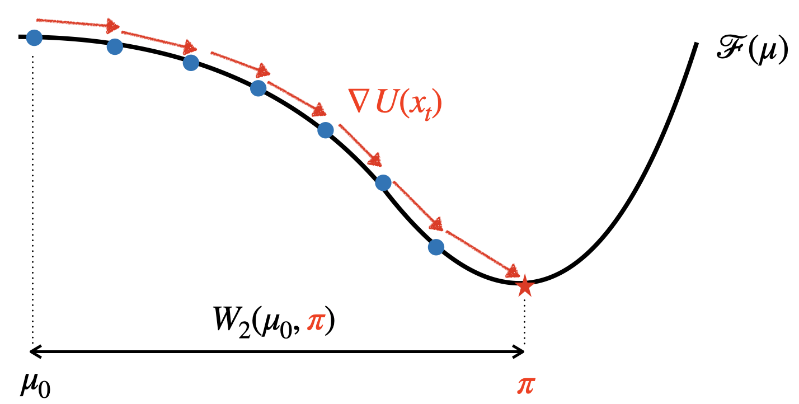
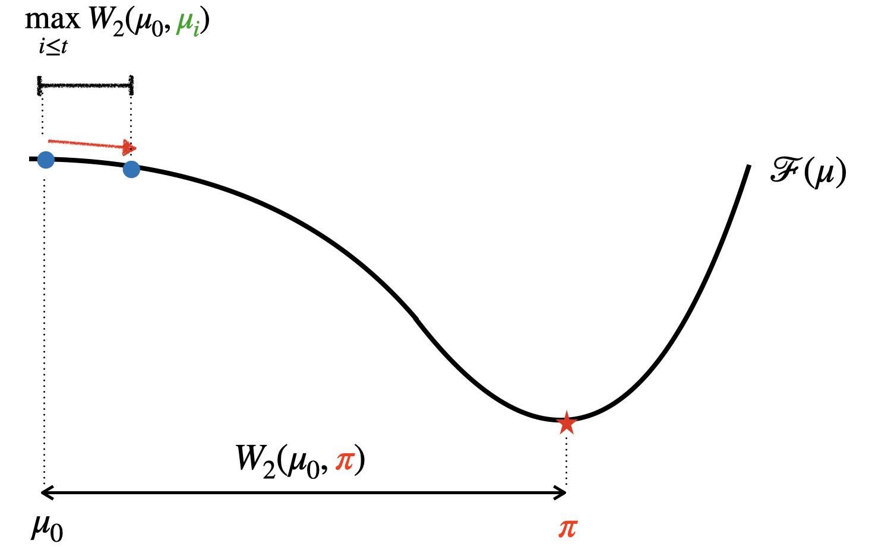
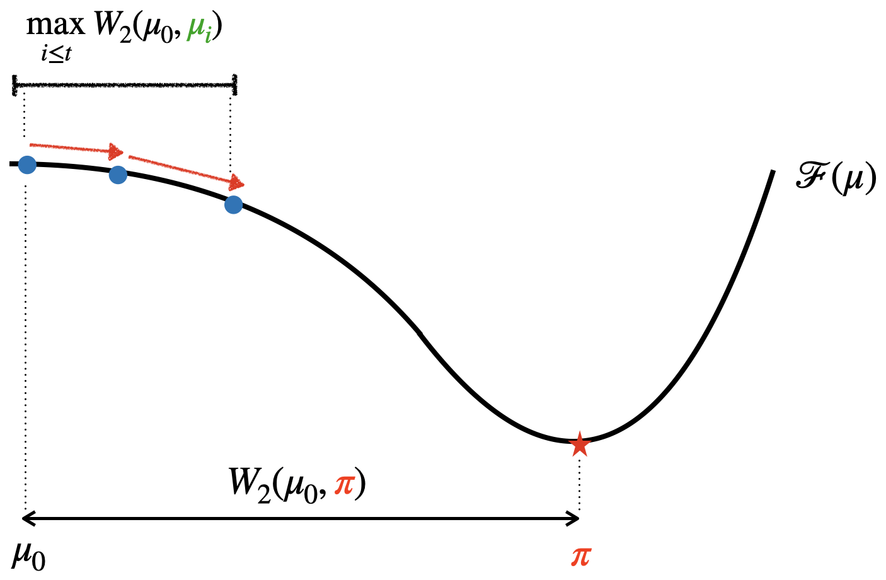
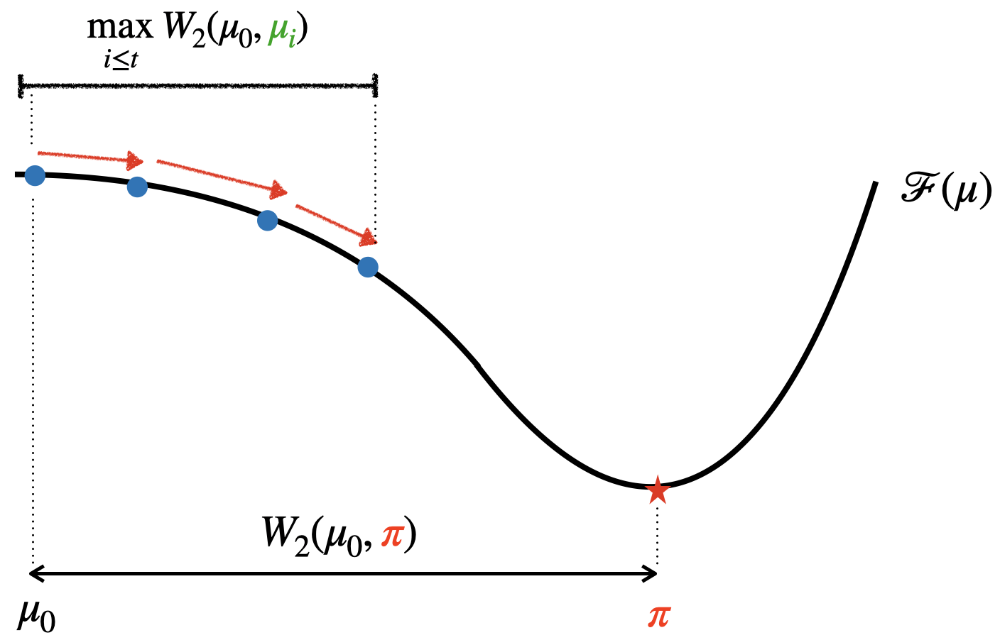
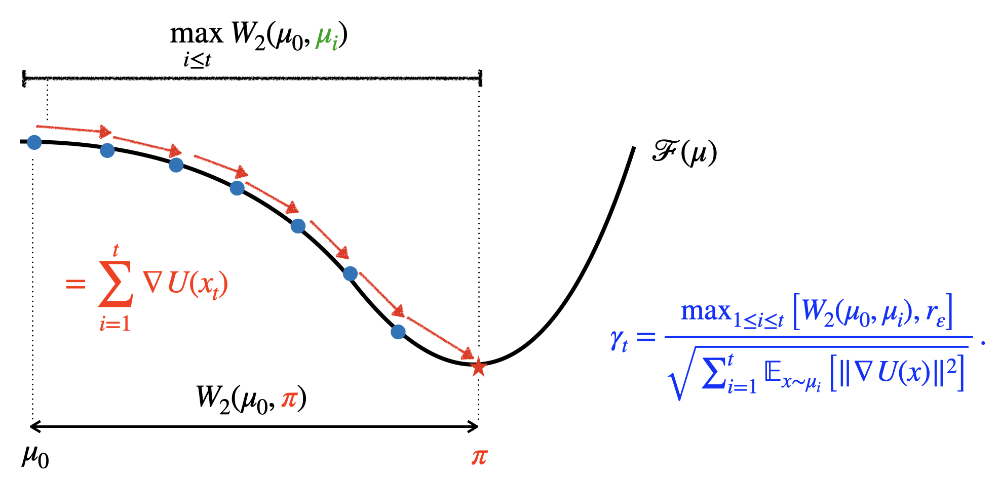

In many gradient-based sampling algorithms the step size (or learning rate) matters far more than we would like to admit. Pick it too small and the chain crawls; pick it too large and it blows up. In practice we end up running the same algorithm many times over a grid of step sizes, staring at diagnostic plots and trying to decide which run “looks OK”.
In our recent paper, Tuning-Free Sampling via Optimization on the Space of Probability Measures, we try to remove this manual tuning step altogether.
The core idea is simple:
View sampling algorithms as optimisation algorithms on the space of probability measures, and design a parameter-free step size schedule directly from an upper bound on the objective functional.
The result is Fuse – the Functional Upper-Bound Step-Size Estimator – a dynamic, tuning-free step size schedule for Wasserstein gradient-flow algorithms. You can plug Fuse into a wide range of sampling algorithms, including ULA, SGLD, SVGD, mean-field Langevin, variational gradient descent, etc., and you obtain variants that are effectively step-size free, while retaining (almost) the same theoretical guarantees as the optimally-tuned versions.
This post gives a high-level overview of the main ideas, with a particular focus on how Fuse is constructed and why it works.
Sampling as optimisation on the space of probability measures
Consider a target distribution
$$\pi(\mathrm{d}x) \propto \exp(-U(x))\mathrm{d}x,$$
and a probability measure $\mu$ on $\mathbb{R}^d$. Recently, a new perspective on sampling algorithms has developed where we frame sampling as an optimisation problem
$$\min_{\mu} \mathcal{F}(\mu),$$
where $\mathcal{F}$ is a functional on probability measures. The canonical choice is the KL divergence $\mathcal{F}(\mu) = \mathrm{KL}(\mu | \pi),$ but other choices (e.g. functionals based on KSD or mean-field neural network objectives) are also possible.
The optimisation lives on the Wasserstein space $(\mathcal{P}2(\mathbb{R}^d), W_2)$: the set of probability measures with finite second moment, equipped with the 2-Wasserstein distance $W_2$. A Wasserstein gradient flow of $\mathcal{F}$ is a curve $(\mu_t)_{t\ge0}$ such that
$$\partial_t \mu_t + \nabla \cdot (\mu_t v_t) = 0, \qquad v_t = - \nabla \frac{\delta \mathcal{F}}{\delta \mu}(\mu_t),$$ i.e. probability mass moves in the direction of steepest descent of $\mathcal{F}$ under the Wasserstein geometry.
For the KL functional with target $\pi$, this gradient flow coincides with the Fokker–Planck equation of the overdamped Langevin dynamics, so following the gradient flow corresponds to moving $\mu_t$ towards $\pi$.
We can picture this as follows: along the horizontal axis we measure distance in $W_2$ from the initial distribution $\mu_0$ towards the target $\pi$; vertically we plot the value of the functional $\mathcal{F}(\mu)$.

The black curve is the gradient flow trajectory of the functional. Starting from $\mu_0$ (blue dot), following the flow moves us towards $\pi$ (red star) while decreasing $\mathcal{F}(\mu)$.
Discretising the flow: from gradient flows to algorithms
To obtain an actual sampling algorithm we discretise the gradient flow in time. For the KL functional this leads to variants of the unadjusted Langevin algorithm (ULA):
$$x_{t+1} = x_t - \gamma_t \nabla U(x_t) + \sqrt{2\gamma_t},\xi_t,$$ with $(\xi_t)$ i.i.d. standard Gaussians and step size $\gamma_t > 0$.
In measure space this corresponds to a sequence of distributions $(\mu_t)$ generated by applying the Markov transition kernel of ULA. We can think of the evolution as taking discrete steps along the gradient flow:
Conceptually, you can imagine that the blue dots are the functional values for marginals $\mu_t$, the red arrows indicate the discrete updates driven by the gradient $\nabla U(x_t)$.

Two important facts about this discretisation:
- There is an optimal constant step size (in hindsight) that minimises an upper bound on the sub-optimality $\mathcal{F}(\bar\mu_T) - \mathcal{F}(\pi)$, where $\bar\mu_T$ is an appropriate average of the iterates. This step size depends on:
- the Wasserstein distance between $\mu_0$ and the “average” iterate, and
- accumulated information about gradients along the trajectory.
- Unfortunately, we cannot compute the optimal step size in practice. It depends on quantities such as $W_2(\mu_0, \pi)$ which are unknown and hard to estimate exactly.
So, in theory, an optimal step size exists, but in practice we end up guessing it.
The goal of the paper is to bridge this gap: construct a dynamic schedule $\gamma_t$ that tracks the optimal step size without knowing the constants it depends on, and prove that this schedule achieves (almost) the same convergence rate.
A functional upper bound and an “oracle” step size
The starting point is a functional inequality of the form $$\mathcal{F}(\bar\mu_T) - \mathcal{F}(\pi) \lesssim \frac{A_T(\mu_0,\dots,\mu_T) + B_T(\gamma_1,\dots,\gamma_T)} {\sum_{t=1}^T \gamma_t},$$ where:
-
$A_T$ involves Wasserstein distances between the initial distribution and the intermediate iterates (i.e., “how far we could travel?”), and
-
$B_T$ involves accumulated squared gradients (i.e., “how much optimisation effort we have spent?”).
If we fix all iterates and treat the step size as a single scalar $\gamma$, this bound simplifies to something of the form $$\mathcal{F}(\bar\mu_T) - \mathcal{F}(\pi) \lesssim \frac{D^2}{\gamma T} + \gamma G^2$$, where:
- $D$ is a measure of distance in $W_2$ from $\mu_0$ to the target distribution $\pi$,
- $G^2$ is an average squared gradient norm along the trajectory.
Minimising the right-hand side in $\gamma$ yields an “oracle” step size
$$\gamma^\star \approx \frac{D}{G \sqrt{T}},$$
which recovers the familiar optimal $1/\sqrt{T}$ behaviour. The difficulty is that both $D$ and $G$ are unknown.
The key idea in Fuse is to replace the unknown constants by quantities that we can estimate online from the evolving trajectory, while keeping the same functional shape as the oracle step size.
The Fuse step size schedule
Fuse builds its step size by combining two pieces of information:
- Numerator: how far we have moved from where we started?
We track the Wasserstein distance from the initial distribution $\mu_0$ to each intermediate iterate $\mu_i$,
$$W_2(\mu_0, \mu_1),; W_2(\mu_0, \mu_2), \dots $$
and keep their running maximum (see figure below). Intuitively, this captures the scale of the problem.
- Denominator: how much gradient effort we have accumulated?
We track a running sum of squared gradient norms
$$\sum_{i=1}^t \mathbb{E}_{x\sim\mu_i}\bigl[|\nabla U(x)|^2\bigr],$$
measuring how much “optimisation work” we have done up to iteration t.
Putting these together, the idealised Fuse schedule for ULA takes the form $$\gamma_t = \frac{\displaystyle \max_{1 \le i \le t} \bigl[, W_2(\mu_0, \mu_i), r_\varepsilon \bigr] }{ \displaystyle \sqrt{\sum_{i=1}^t \mathbb{E}_{x\sim\mu_i}\bigl[|\nabla U(x)|^2\bigr]} },$$ where $r\varepsilon>0$ is a small constant that prevents the numerator from degenerating early on.
The sequence of figures below shows how this step size is constructed.
Tracking the distance travelled
We start from the Wasserstein gradient flow picture and keep track of how far each iterate $\mu_i$ is from the starting distribution $\mu_0$.
First step: 
Second and third step:  
As the algorithm progresses, we update the running maximum $$\max_{1\le i\le t} W_2(\mu_0,\mu_i).$$
By the time we are close to the target, the numerator effectively captures the overall radius of the trajectory in Wasserstein space.
In practice, we do not have access to exact Wasserstein distances, so we work with particle-based approximations and coarse upper bounds derived from the dynamics. The important point is that these approximations are cheap to compute and only depend on quantities we already use in the algorithm.
Accumulating gradient information
The denominator of Fuse looks like an AdaGrad-style accumulator of squared gradient norms, $$\sum_{i=1}^t \mathbb{E}_{x\sim\mu_i}\bigl[|\nabla U(x)|^2\bigr].$$ As this quantity grows, the step size automatically shrinks, so Fuse naturally transitions from aggressive early steps to more conservative steps later on, without ever needing a hand-crafted schedule.
Combining numerator and denominator gives the full Fuse step size:

Fuse therefore behaves like a Polyak / AdaGrad-type schedule lifted to the Wasserstein space: it adjusts the step size using only information that is intrinsic to the optimisation problem on probability measures, rather than requiring us to specify Lipschitz constants, strong-convexity parameters, or distances to the optimum.
From Fuse to tuning-free sampling algorithms
The analysis is carried out for two time-discretisations of the Wasserstein gradient flow:
-
Forward-flow discretisation. This covers ULA and its mean-field variants. The resulting algorithms include:
- ULA × Fuse – a tuning-free version of (parallel-chain) ULA;
- SGLD × Fuse – the stochastic-gradient counterpart, suitable for large datasets;
- MFLD × Fuse – a mean-field Langevin algorithm with automatic step sizes.
-
Forward Euler discretisation. This covers particle-based methods where we approximate the Wasserstein gradient with a kernel operator. Here we obtain:
- SVGD × Fuse – a tuning-free Stein variational gradient descent;
- VGD × Fuse – a tuning-free variational gradient descent algorithm in the mean-field setting;
- a step-size-free variant of KSD descent.
All of these methods share the same high-level pattern:
- Maintain a collection of particles $(x_t^{(k)})_{k=1}^N$ representing the current measure $\mu_t.$
- Use these particles to compute:
- approximate Wasserstein distances from the initial distribution;
- approximate expectations of squared gradient norms.
- Update the step size $\gamma_t$ using Fuse.
- Propagate each particle using the relevant update rule (Langevin, SVGD, mean-field dynamics, etc.).
In practice, there is only one hyperparameter: the small initial movement scale $r_\varepsilon$. The performance is, in most cases, extremely robust to this choice; across several orders of magnitude of $r_\varepsilon$ the behaviour of the algorithm barely changes.
What do we actually prove?
Under a set of fairly standard assumptions — geodesic convexity of $\mathcal{F}$ in the Wasserstein space, and local boundedness of (stochastic) gradients — the paper establishes the following:
- For both the forward-flow and forward Euler discretisations, Fuse achieves the same convergence rate (up to a logarithmic factor) as the algorithm with the optimally tuned constant step size.
- This holds in both non-smooth and smooth settings, for deterministic and stochastic gradients.
- The bounds are stated in terms of the functional sub-optimality $\mathcal{F}(\bar\mu_T) - \mathcal{F}(\pi)$, where $\bar\mu_T$ is an average of the iterates with carefully chosen weights. In the KL case, this directly controls the KL divergence between an averaged iterate and the target.
- In the Gaussian setting, where the gradient flow remains Gaussian for all time, all Wasserstein distances and expectations can be computed in closed form.
From a theoretical perspective, the message is that we can obtain near-optimal convergence rates in Wasserstein gradient-flow algorithms without ever specifying a step size. The information needed to tune the algorithm is extracted on the fly from the evolving trajectory in measure space.
Experiments in practice
The paper benchmarks Fuse across a range of synthetic and real-world problems. A few highlights:
Gaussian targets
For a 10-dimensional Gaussian target with varying covariance structure, ULA × Fuse is compared with standard ULA over a wide grid of fixed step sizes.
- Performance vs step size. ULA shows the usual U-shaped behaviour: too small a step size leads to high bias; too large a step size causes instability. ULA × Fuse, in contrast, achieves near-optimal performance for essentially any reasonable value of the initial movement parameter.
- Robustness to anisotropy and initialisation. The behaviour of ULA × Fuse is remarkably stable when we change the conditioning of the target covariance or the distance between $\mu_0$ and $\pi$.
Bayesian logistic regression
Two settings are considered:
- Synthetic data with a Gaussian prior. ULA × Fuse is compared to ULA across different step sizes. Posterior means and credible intervals computed with Fuse match closely those obtained from a long, carefully tuned reference run.
- Hierarchical prior with the Covertype dataset. Here we need stochastic gradients. SGLD × Fuse and SVGD × Fuse are compared against their classical counterparts over a wide range of step sizes.
- The predictive accuracy of SGLD and SVGD depends very sensitively on the step size.
- The Fuse variants achieve essentially the same best accuracy across a broad range of initial movement parameters, and remain stable as we vary the mini-batch size.
Mean-field neural networks
Finally, the paper looks at training a simple mean-field neural network, where the optimisation objective is not geodesically convex and the theory does not directly apply.
Even in this more challenging setting:
- MFLD × Fuse and VGD × Fuse exhibit good empirical performance,
- and again show very mild sensitivity to the initial movement scale.
These experiments collectively suggest that Fuse provides a practical way to make gradient-based samplers much less painful to tune, while maintaining competitive performance.
Relation to previous work
Fuse sits at the intersection of two lines of research:
- Parameter-free optimisation in Euclidean spaces. Methods such as coin-betting, AdaGrad, and Polyak step sizes design learning-rate-free schedules that adapt to unknown problem parameters by relying on cumulative gradient information.
- Optimisation on the space of probability measures. Viewing sampling as optimisation in Wasserstein space has become standard, leading to algorithms like ULA, SVGD, mean-field Langevin, variational gradient descent, and many others.
The contribution of Fuse is to lift parameter-free ideas to the Wasserstein setting, using functional inequalities specific to gradient flows on probability measures. The resulting schedule is not just a heuristic; it is tightly coupled to a non-asymptotic upper bound on $\mathcal{F}(\bar\mu_T) - \mathcal{F}(\pi)$.
Where next?
Several directions look promising:
- Other geometries. The analysis is formulated for Wasserstein gradient flows, but in principle the same approach should extend to other geometries (Stein, Fisher–Rao, Kalman, …) given appropriate functional inequalities and notions of geodesic convexity.
- Richer models and functionals. The current experiments focus on relatively classical targets and mean-field networks. Extending Fuse to more complex generative models and high-dimensional posteriors is an obvious next step.
- Sharper bounds and reduced logarithmic factors. The price we pay for being tuning-free is a logarithmic factor in the convergence rate. It would be interesting to know how far this can be reduced, and whether further problem structure can be exploited.
For now, the main takeaway is that you can run a wide class of sampling algorithms without hand-tuning a step size, by letting Fuse adaptively select the step size based solely on the trajectory of the algorithm in the space of probability measures.
If you are interested in the full details, including proofs and additional experiments, the paper is available on arXiv.
References
- Sharrock, L. and Nemeth, C. (2025). Tuning-Free Sampling via Optimization on the Space of Probability Measures. arXiv:2510.25315. https://arxiv.org/pdf/2510.25315.pdf 
- Fearnhead P, Nemeth C, Oates CJ, Sherlock C. Scalable Monte Carlo for Bayesian Learning. Cambridge: Cambridge University Press; 2025. (Institute of Mathematical Statistics Monographs).
- Welling, M. and Teh, Y. W. (2011). Bayesian learning via stochastic gradient Langevin dynamics. In Proceedings of the 28th International Conference on Machine Learning (ICML 2011).
- Liu, Q. and Wang, D. (2016). Stein variational gradient descent: A general purpose Bayesian inference algorithm. In Proceedings of the 30th Conference on Neural Information Processing Systems (NIPS 2016).
- Suzuki, T., Wu, D., and Nitanda, A. (2023b). Convergence of mean-field Langevin dynamics: time-space discretization, stochastic gradient, and variance reduction. In Proceedings of the 37th Annual Conference on Neural Information Processing Systems (NeurIPS 2023).
- Chazal, C., Kanagawa, H., Shen, Z., Korba, A., Oates, C. J., et al. (2025). A Computable Measure of Suboptimality for Entropy-Regularised Variational Objectives. arXiv preprint arXiv:2509.10393.